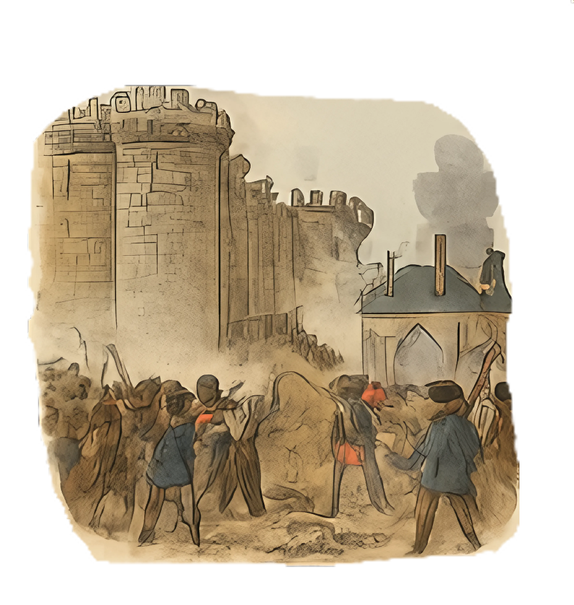

Revolusi Prancis

APA YANG TERJADI?
Revolusi Prancis adalah peristiwa besar yang mengubah cara Prancis diperintah. Rakyat yang marah terhadap Raja dan para bangsawan melakukan aksi protes, bahkan menyerbu penjara Bastille, yang menjadi simbol kebebasan.
Akhirnya, sistem pemerintahan berubah menjadi republik.
MENGAPA TERJADI?
Karena rakyat merasa tidak adil. Pajak terlalu tinggi, makanan langka, dan hanya bangsawan yang hidup nyaman. Ini membuat rakyat marah dan ingin mengubah segalanya.
SIAPA KORBANNYA?
Banyak bangsawan dan rakyat yang meninggal. Raja Louis XVI dan Ratu Marie Antoinette dihukum mati dengan guillotine.
NILAI PENTING BAGI PRANCIS
Mereka mendapatkan kebebasan lebih, hak-hak baru, serta sistem pemerintahan yang lebih demokratis.
NILAI PENTING BAGI DUNIA
Revolusi Prancis menginspirasi banyak negara lain untuk melawan ketidakadilan dan memperjuangkan hak asasi manusia.